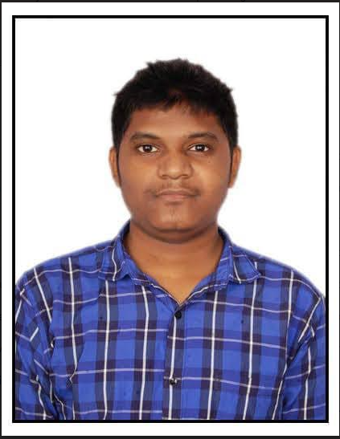

About Me
Appari Sri Charan.

Brief Summery:
Systems Engineer with experience of 1.3 years in Tecgnology
solutions Group. Proficient in conducting Testing Activities in RPA Platform. Working as an individual Contributer and upskilling through Trainings and
Certifications.
Expertise / Skills:
RPA Platforms: AssistEdge, Automation Anywhere, Ui Path.
Languages: Java, Pyhon.
Open Source Tools: Selenium using Java.
Frameworks: BDD Cucumber, Junit, TestNG.
Databases: RDBMS.
Qualifications:
BTECH. in Mechanical Engineering From Sreenidhi Institute of Science and Technology.
Training and Certifications:
Certified Automation Anywhere Advanced A360 Professional,
Infosys Certified Ui Path Associate,
AssistEdge 19.0.
Projects as Automation(RPA):
- Worked on Assist Edge for lanxess Client which is a speciaity chemicals Group...
- Effectively performed ST Implementations for the use case Lanxess Guest-Net use case.
- Worked on Assist Edge for Daimler(Mercedez Benz) Client which is a biggest producers of premium cars and also
biggest manufactures of commercial vehicles....
- Performed ST Implementations for use cases below:
-
Daimler AnZ Click Cell on click Automation --- Ramp Award!
-
Daimler AnZ Retailer Depature Email MBAG and DTAG --- Appreciated for Exemplary Performance in upholding the spirit of infosys BPM.
Overall Experience in years:
Infosys Limited: 1.6 yrs